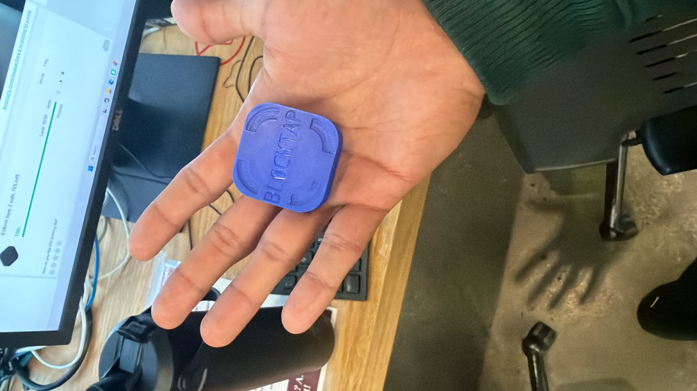

◎♪▶↗
Your distractions. Your choice.01
Choose what to pause.
Choose the distracting apps you want to pause in Foqos, our current companion app.
That thing you’ve been meaning to do?
Make time for it. Blocktap puts a physical boundary
between you and the endless scroll.
 MEET YOUR OFFLINE SWITCH.
MEET YOUR OFFLINE SWITCH.A screen-time limit lives on your screen.
Blocktap brings the boundary into the real world.
Choose the distracting apps you want to pause in Foqos, our current companion app.
The idea is simple: use a real-world object to make stepping away from the scroll intentional.
Nothing to refresh.
Everything to enjoy.
Leave your brick behind and give your attention to the thing in front of you.
One less scroll. One more chapter.
See what a small daily change could give you.
back in your year.
A morning that starts with you.
Not your notifications.
Turn a page.
Not another feed.
Give your favorite people
your undivided attention.

A LITTLE PRINT. MORE SPACE FOR LIFE.Blocktap is a physical screen-time blocking brick built around one simple belief: your attention belongs to you.
Something you can hold. A boundary you can see. A reminder to spend your time on purpose.
You’re looking at an early prototype. Blocktap is $39. Launch timing is still to come. Foqos is the current companion app for iPhone.
Buy Blocktap ↗Blocktap is a physical screen-time blocking brick. It’s designed to create a tangible boundary between you and distracting apps, helping you make more room for life away from the scroll.
A physical object adds an intentional step outside your phone. The idea is to create a little distance from the habit of reopening distracting apps without thinking.
Blocktap is currently in the prototype stage. The price is $39. Launch details haven’t been announced yet. This page introduces the product and the idea behind it.
We currently use Foqos on iPhone as the companion app. See Foqos on the App Store for current device requirements and compatibility.
That depends on your habits and the boundaries you choose. The calculator above shows how daily minutes can add up over a year; it isn’t a guarantee of a particular reduction in screen time.
A little less phone. A little more you.
Buy Blocktap ↗Companion app: Foqos by Ali Waseem.
Print credit: the brick shown here was printed from Blocktap — Live More, Scroll Less on MakerWorld. Thanks to the model’s creator for the design.